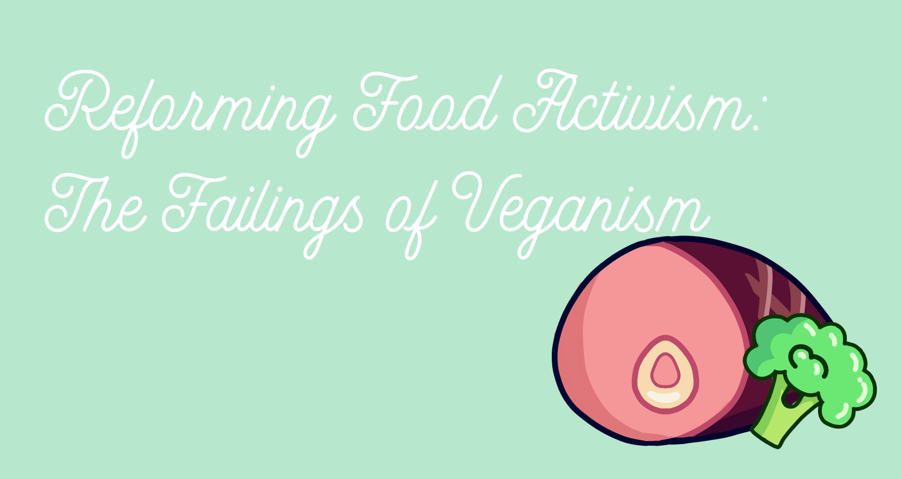
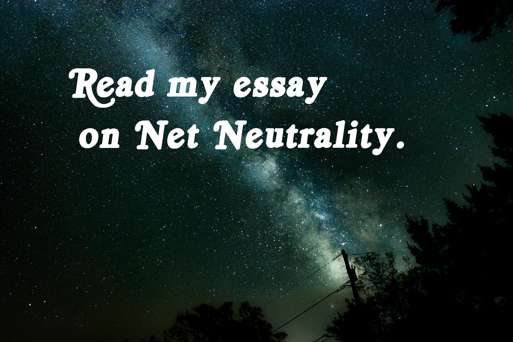
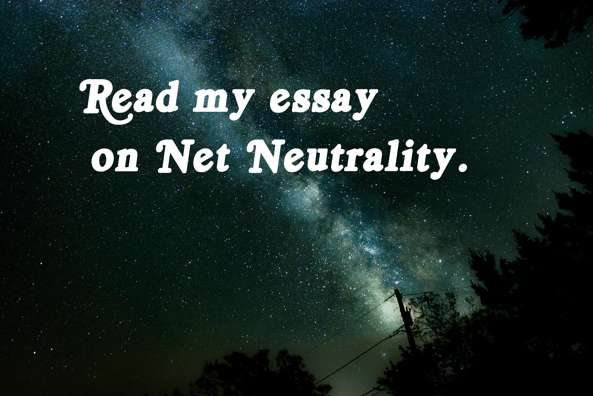

In high school, one of my English teachers issued a mandatory word count for our papers; however, there were some restrictions. Words three letters or less, in quotes, or in parentheses did not count towards the total. If I wanted to know how long my paper was, I would have to count it out by hand. Through the VJM Wordcounter, I've alleviated this problem.
This program works on a simple algorithm that splits words into lists while traversing user input. First, the input is split on the double quote character (") using the .Split() method. By the nature of this method we now have a list where every other element has words that are canidates for the total. If the first item in the list is an empty character, it follows that the third item in the list will be the first nonquoted character. This is due to how the Split method functions. If the first item in the list is not in quotes, then we can proceed as normal and add each even item to a new list. When we convert the new list to a string we can follow the same logic after splitting on parentheses.
Finally, we have a complete list of candidates. Now I iterate through each word in the list and check if it is greater than three characters. If it is, then I increment a count and, once the end of the list is reached, display it to the user.
The following is a flowchart for this program:


Veganism is the practice of abstaining from animal products in diet and lifestyle to prevent animal exploitation. As one of the most widespread and controversial forms of food activism in the world today, it is worth examining exactly how veganism fails as a movement. As activists, vegans should be looking to recruit new members; however, they often alienate others. Their radical views, racist analogies, ableist tendencies, contrived facts, and holier-than-thou attitude cause potential members to shy away from the movement. Not all vegans fall under this umbrella, and some may agree that the movement has radical and damaging members; however, in this paper I will be using the term “vegans” very generally to avoid confusion.
One of veganism’s greatest struggles is attracting new members. Unfortunately, this has little to do with the difficulty of the dietary practice but rather lies in the way vegans spread their message. Peta, one of the largest animal welfare companies in the world, is mostly to blame for dishing out offensive advertisements. In one instance, Peta erected a billboard reading “MEAT KILLS” outside a hospital in Glasgow where many patients were being treated for swine flu (Whitehead, 2009). Peta’s policies, like their advertising, are controversial. On their website, they state: “Optimally, humans should be relied upon for support of the disabled rather than working dogs and other animals—it is too common for animals to be exploited and abused” (Peta, 2005). For people who cannot live without their service animal, this statement appears ill-informed and offensive. Even without Peta, vegan culture can alienate people from all walks of life.
Communities of color are often left out of vegan movements for many different reasons. Unfortunately, people of color live closer to the poverty line than white people in America. People in food deserts and people with little income, both of which are likely to be black or brown people, cannot afford to go vegan. Veganism is thought of as “Whole Foods shopping” and “having a large enough income to eat only expensive foods” (Luxur, 2017). In addition to financial inaccessibility, veganism can be culturally inaccessible to people of color. Many cultural foods consist of meat and even vegetarian cuisines, such as Hindu food, incorporate fair amounts of dairy. Not only are there few vegan recreations of traditional food, but those recreations are usually stripped of the culture they originated in. Just like Peta, vegans can use shocking advertisements to try and spread their own message. For instance, @VeganRevolution, an account with over sixty thousand followers, tweeted “Black lives matter…more than Chickens or Cows lives…apparently” in 2015. Many vegans employ a similar naïve mindset when using social inequalities and tragedies to promote their movement. In addition to hijacking black lives matter, vegans have also used the holocaust as a metaphor for what livestock endure. Anti-Semitist and racist marketing merely touches the surface of veganism’s problems.
Many vegans engage in ableism, discrimination against disabled people, through the promotion of their diet. This has been popularized by the phrase “anyone can go vegan,” which is very far from the truth. People with physical disabilities may need to be sustained differently that able-bodied people and are therefore incapable of living healthily on a vegan diet. Many people with autism suffer from sensory processing disorder that limits their food choice on a normal diet, sometimes making it impossible to adopt veganism. It’s a popular technique for those suffering from anorexia to adapt a vegan diet to make food avoidance easier in social settings. Attempting to readapt this diet healthily may trigger a relapse.
Some people may find it difficult to be vegan and maintain their health, so it is natural that they take to the internet for help. In a 2004 study, two scientists from the Netherlands observed a Dutch forum on veganism. One woman on the forum had concerns about the possibility of having developed osteoporosis after years of veganism. Another poster responds with pseudo authority saying it’s “impossible for a problem to occur” but finishes her post with “in my opinion…” (Sneijder, P., & Te Molder, H. F. M., 2004). The study showed that most vegans will assume that veganism itself is healthy and, in turn, blame the person on the diet for their lack of effort. They do not realize that some people cannot live healthily on the vegan diet and just because it works for some does not mean it works for all.
Morals are typically the reason most people go vegan, but some may say they are changing their lifestyle to better the environment. The idea that veganism is inherently better for the environment than vegetarian or omnivorous diets is false. It is in this contrived moral pedestal that veganism’s problems as an activist movement become apparent. According to a 2016 study, a global vegan diet would waste available land that could instead be used to feed more people, and the highest performing diet was a vegetarian diet that included dairy (Eck 2016). Beyond environmental issues, there is a case to be made that vegan diets aren’t exactly “cruelty-free” as far as human rights are concerned. Cashews are commonly used in vegan dishes to replicate dairy. Vietnam is one of the world’s largest cashew producers, but the workers tasked with prepping the cashews for consumption are not doing so consensually. “Forty thousand drug users are detained at any one time in Vietnam, and forced labor is their main ‘treatment’” (Amon, 2011). Drug addicts in this form of rehabilitation suffer far more than any dairy cow, particularly because cashew peeling can irritate the lungs and skin. This can be prevented with masks and gloves; however, workers are charged for these necessities. Most vegan food staples come at the cost of human rights violations, so what does it mean then to be cruelty-free?
Veganism, like any activist movement, has its fair share of problems. Ignorance to cultural and racial identities limit vegan inclusion of people of color. A fad of “white veganism” spreads without concern for people who may not be able to take on the lifestyle for whatever reason. If veganism wants to find favorability in the modern world, vegans need to help reform its identity by promoting inclusivity and accessibility.
References
Amon, J. (2011, October 3). National Cashew Day more than nuts. Global Post. Retrieved from https://www.hrw.org/news/2011/10/03/national-cashew-day-more-nuts
Eck, A. (2016, August 16). Going Vegan Isn’t the Most Sustainable Option for Humanity. Retrieved November 20, 2017, from Nova Next website: http://www.pbs.org/wgbh/nova/next/earth/going-vegan-isnt-actually-th/
Luxur, A. (2017, January 9). Dismantling White Veganism [Blog post]. Retrieved from Vegan Voices of Color website: https://veganvoicesofcolor.org/2017/01/09/dismantling-white-veganism/
Peta. (2005, July 20). Doing What’s Best for Our Companion Animals. Retrieved November 20, 2017, from https://www.peta.org/issues/companion-animal-issues/companion-animals-factsheets/whats-best-companion-animals/
Revolution, V. [VeganRevoIution]. (2015, Apr 28). Black lives matter… more than Chickens or Cows lives… apparently. [Tweet]. Retrieved from https://twitter.com/veganrevoiution/status/593155075964534784?lang=en
Sneijder, P., & Te Molder, H. F. M. (2004). ‘Health Should Not Have to Be a Problem’: Talking Health and Accountability in an Internet Forum on Veganism [PDF]. Journal of Health Psychology, 9(4). https://doi.org/10.1177/1359105304044046
Whitehead, J. (2009, June 24). Peta erects ‘meat kills’ billboard outside Glasgow swine flu hospital. Campaign. Retrieved from https://www.campaignlive.co.uk/article/peta-erects-meat-kills-billboard-outside-glasgow-swine-flu-hospital/915555?src_site=brandrepublic
 
